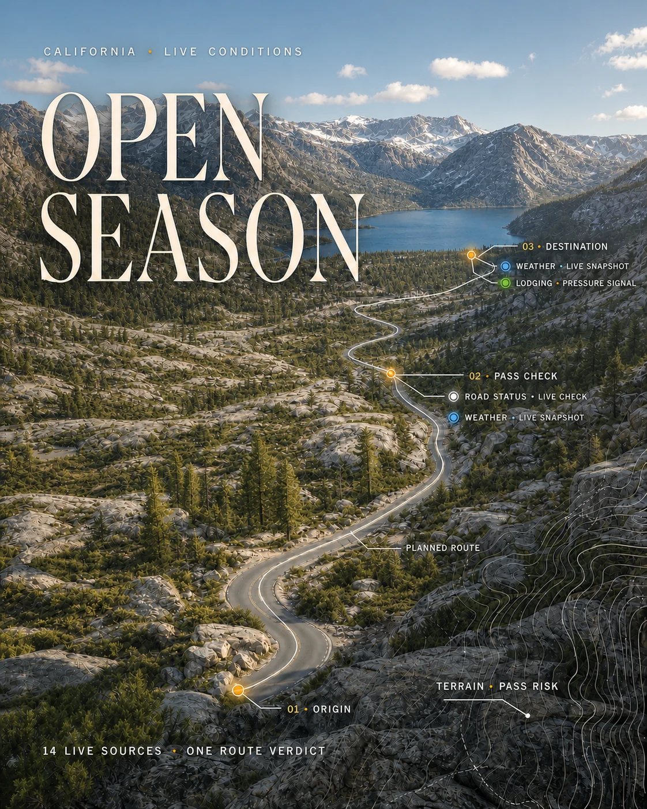
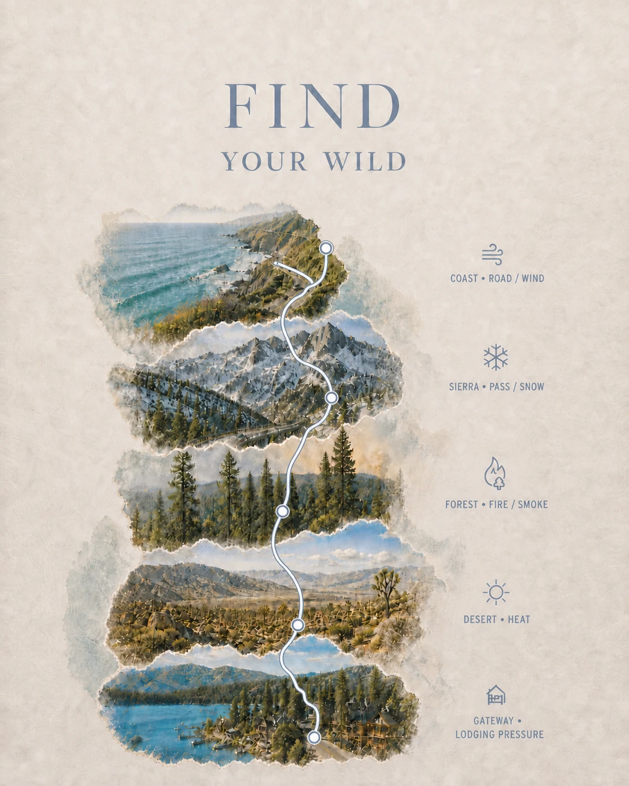
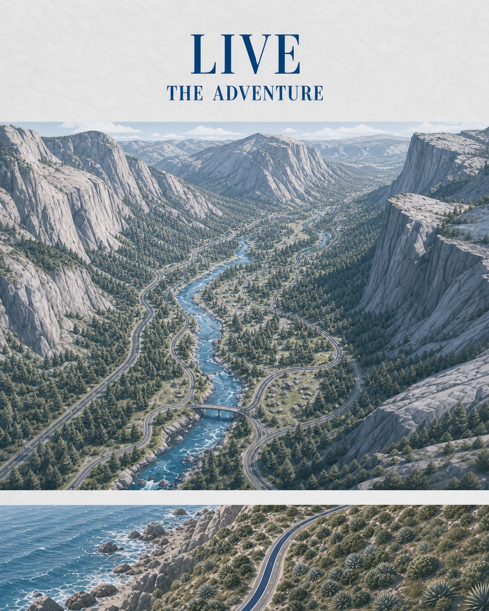
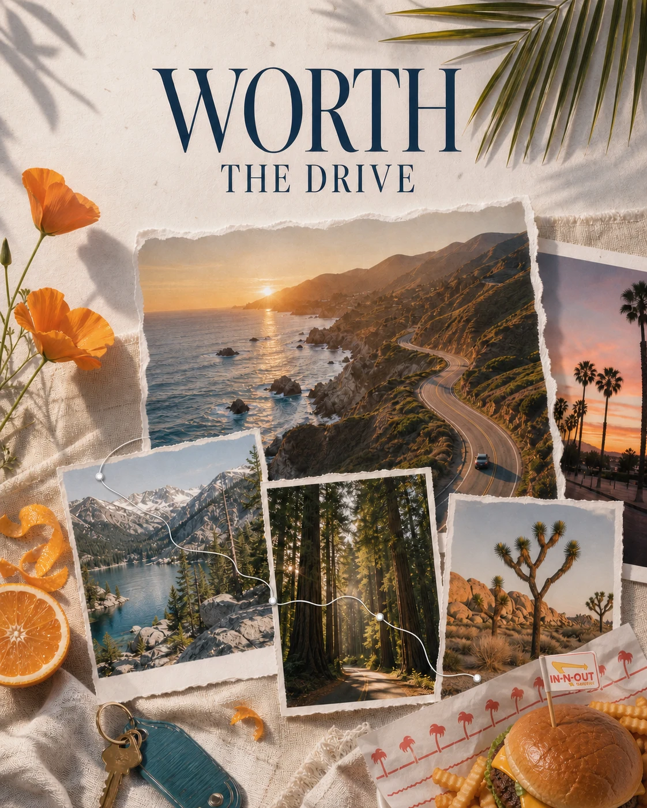

WSC Auto
01 / 04
A workshop, not a showroom
Independent European vehicle service, built for complex work.
Freelance product design and full-stack development, from research to shipped product.
Independent European vehicle service, built for complex work.




14 live sources. One route verdict.
Long-form content becomes a set of short-form candidates.
UX/UI designer turned full-stack developer. I help founders and small teams turn unclear product problems into designed, built and deployed software — without losing intent in the handoff.